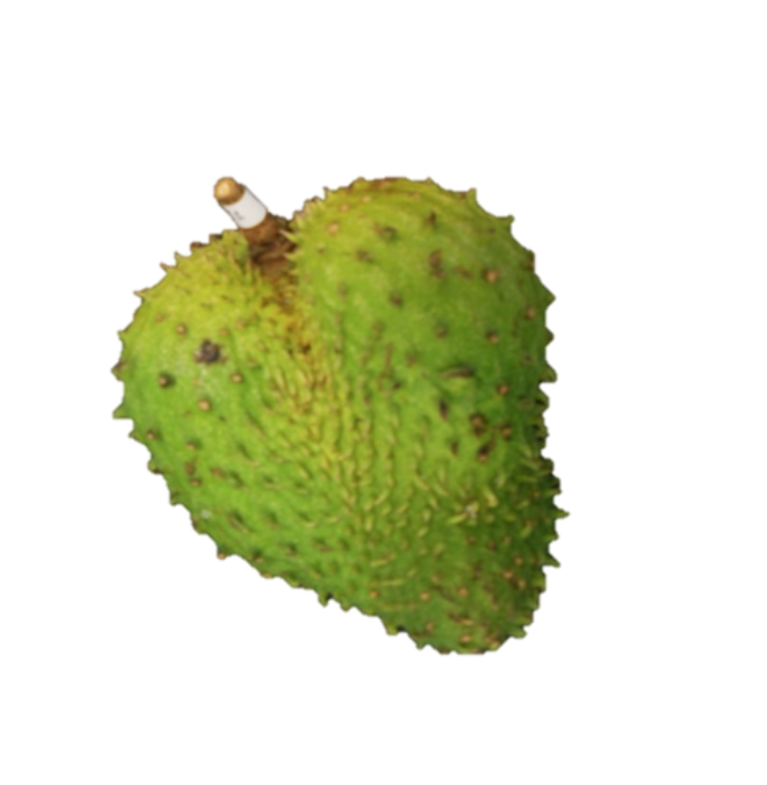

6 Guanábana
(Annona muricata L.)

Gabriela Aguilar Hernández, Efigenia Montalvo González 1*
Tecnológico Nacional de México/Instituto Tecnológico de Tepic
Av. Tecnológico 2595, Col. Lagos del Country CP. 63175, Tepic Nayarit, México.
Autor para correspondencia: emontalvo@ittepic.edu.mx
6.1 Características agronómicas
6.1.1 Taxonomía
La guanábana (Annona muricata L.) pertenece a la familia Annonaceae y aunque no se sabe con certeza el origen, probablemente es nativa de las áreas tropicales de América del sur y del norte y está ampliamente distribuida en las regiones tropicales de América Central y del Sur, África Occidental y el Sudeste Asiático (Pinto et al., 2005). En la Cuadro 6.1 se presenta la clasificación taxonómica de la guanábana.
| Reino | Plantae |
| Subreino | Tracheobionta |
| División | Magnoliophyta |
| Clase | Magnoliopsida |
| Subclase | Magnoliidae |
| Orden | Magnoliales |
| Familia | Annonaceae |
| Género | Annona |
| Especie | Muricata Linn |
| Fuente: CONABIO (1996). |
El árbol de Guanábana es un árbol vertical de baja ramificación que alcanza de 8 a 10 m y consta de hojas verdes, brillantes y perennes (Badrie y Schauss, 2010). Los árboles de guanábana producen frutos grandes, con cáscara espinosa de color verde oscuro y pulpa agria y fibrosa, un fruto tipo baya. El fruto es ovalado o en forma de corazón, con frecuencia irregular asimétrico y puede llegar a pesar desde 0.4 hasta 10 kg (Pinto et al., 2005; Jiménez et al., 2014). Los frutos generalmente pueden contener desde 5 hasta 200 o más semillas de forma oval, lisa, dura y negras de 1-2 cm de longitud. Su superficie interna es de color crema y granular y se separa fácilmente de la masa de segmentos jugosos, fibrosos y blancos que rodean el núcleo central blando y compacto (Coelho y Alves, 2011).
6.1.2 Condiciones de cultivo
El cultivo de Guanábana es considerado un cultivo tropical, capaz de soportar temporadas de sequía cortas y medianas en su etapa adulta (Torrente et al. 2016). La producción frutícola por árbol es baja con relación a otros frutales, por lo que el éxito comercial del guanábano depende de una adecuada selección de genotipos con mayor producción y con frutos de calidad (Evangelista-Lozano et al. 2003).
En México la producción de Guanábana reportada por el SIAP (2015) fue de 16620.91 ton/año, siendo los principales estados productores Nayarit, Colima, Michoacán y Guerrero y en menor escala de producción Campeche, Jalisco, Puebla, Tabasco, Veracruz y Yucatán. Sin embargo, aunque la guanábana se cultiva a diferentes altitudes, el mercadeo está limitado por la corta vida poscosecha de la fruta, porque es susceptible a lesiones físicas, debido a que en un periodo de cuatro a cinco días después de la cosecha y a temperatura ambiente, muestran ablandamiento y alteraciones en el sabor y color externo e interno.
La guanábana se caracteriza por ser un fruto climatérico, con alta respiración y producción de etileno, (Montalvo-González et al., 2014), por lo anterior es considerada altamente perecedera.
| Requerimientos climáticos | El cultivo es susceptible al frío y requiere de climas más tropicales, húmedos y cálidos (Torrente et al. 2016). La guanábana es cultivada principalmente en regiones tropicales, a altitudes inferiores a 1200 m sobre el nivel del mar y entre latitudes 27 °Norte y 22.5 °Sur, con temperaturas entre 25 y 28 °C, humedad relativa entre 60 y 80% y precipitaciones anuales por encima de 1500 Mm (Pinto et al., 2005). |
| Requerimientos de suelo | Los árboles de guanábana no son muy exigentes con el tipo de suelo, pero producen mejor en suelos fértiles, bien aireados, bien drenados y profundos, ricos en materia orgánica y se puede cultivar en una amplia variedad de tipos de suelo a pH desde 5.5 hasta 7.5 (Pinto et al. 2005). |
| Siembra | Las plantaciones que existen en México, por lo general, se cultivan a partir de semillas (que pueden almacenarse durante varios meses antes de la siembra) en las cuales la germinación generalmente toma 3 semanas, pero en condiciones sub-óptimas puede retrasarse hasta 2 o 3 meses (Vidal-Lezama et al., 2015). Alternativamente, la propagación de la especie Annona se logra mediante esquejes para la multiplicación rápida de nuevos genotipos y la eliminación de la infección viral y la enfermedad. (Badrie y Schauss, 2010). |
| Fotoperiodo | El requerimiento de luz mínima para el cultivo es de 2000 horas luz/año (Torrente et al. 2016). |
| Floración | El período desde la polinización hasta la madurez del fruto promedia de 5 a 6 meses. Las flores aparecen en cualquier parte del tronco o cualquier rama y en un mismo árbol pueden presentarse diferentes estados de floración (Miranda et al., 2001). |
6.1.3 Estacionalidad
A pesar de que la guanábana tiende a florecer y fructificar continuamente, hay estaciones de fructificación. La distribución de la floración puede presentarse en dos épocas, la primera en los meses de febrero a mayo y la segunda de octubre a noviembre. Aunque dependiendo del país, la floración también puede estar presente durante todo el año (Miranda et al., 2001; Pinto et al., 2005).
6.1.4 Plagas y enfermedades
Un factor que constituye una limitante severa en la producción de frutales en América Central y en el resto del mundo son las plagas y enfermedades. La siembra intensiva y la poca tecnología de algunos frutales, unido al desequilibrio ecológico producido por prácticas inadecuadas de manejo de insectos plagas y enfermedades, han ocasionado que algunas plagas secundarias se conviertan en primarias para muchos de estos cultivos, debido a esto, es importante conocer las especies de insectos plagas y las enfermedades que limitan la producción del cultivo de guanábana para efectuar el correcto uso de métodos de control que sean amigables con el medio ambiente, eficientes y que, además, permitan incrementar la productividad.
6.1.4.1 Principales plagas de la guanábana
Uno de los principales problemas del cultivo son las plagas, principalmente los barrenadores de fruto, semilla y tallo; ya que los árboles al ser atacados por éstas, no solo producen pérdidas al productor, sino que se convierten en focos permanentes de infestación, proyectándose como una seria amenaza para futuras plantaciones (Becerra y Rosas, 2015). La guanábana es hospedante de más de 30 especies de insectos pertenecientes a Coleoptera, Hymenoptera, Lepidoptera, y Hemiptera (Pinzón-García et al., 2016). Vidal et al. (2014) mencionan que las plagas que más se destacan por producir daños económicos al cultivo son: la avispita o barrenador de la semilla del fruto Bephratelloides cubensis, el perforador del fruto o palomilla Cerconota anonella y la chinche de encaje Corythuca gossypii, también menciona el caso de otras plagas como Acantocephala femorata, Pseudococcus citri, Thecla ortygnus, Membracis mexicana, Saissetia sp, Lonchaeidae. Pinzón-García et al. (2016) mencionan daños esporádicos e imprecisos causados por Gonodonta pyrgo. Hernández et al. (2015) también reportan a Maconellicoccus hirsutus como una de las plagas de mayor importancia en la guanábana.
La infestación del Perforador del fruto Cerconota annonella y el perforador de la semilla Bephratelloides cubensis inicia cuando la hembra deposita los huevos dentro de la semilla en desarrollo. Las larvas se desarrollan dentro de la semilla destruyendo gran porcentaje de éstas mientras la fruta permanece en el árbol. Después que completa el desarrollo, la avispa perfora un pequeño agujero a través de la pulpa para salir fuera de la fruta. El daño ocasionado afecta la calidad de la fruta, cuando el ataque se realiza en flores o frutos pequeños, éstos se secan, se tornan negros y caen al suelo o permanecen momificados en el árbol. Los orificios pueden facilitar la entrada de hongos, como el causante de la antracnosis (Cabrera y Martínez, 2001; Rosas y Becerra, 2012).
En el caso de la Chinche de encaje Corytucha gosypii Fabricius, debido a la succión de savia, se produce senescencia prematura de las hojas y se retarda el crecimiento. En el haz, los daños se observan inicialmente como un punteado blanco cremoso, seguido por manchas de color amarillo pálido, mientras que, en el envés, los daños son semejantes a raspaduras (Rosas y Becerra, 2012; Vidal et al., 2014).
6.1.4.2 Principales enfermedades de la guanábana
Las enfermedades al igual que las plagas que atacan a los frutales tropicales resultan de gran impacto económico debido a las pérdidas que ocasionan en el rendimiento y calidad de la fruta en el cultivo. Las principales enfermedades de la guanábana reportadas son: antracnosis (Colletotrichum gloeosporioides), pudrición blanda, (Rhizopus stolonifer Ehr.), mancha negra de la hoja (Phyllosticta sp), mancha del ápice de la hoja (Pestalotia sp.), mancha blanca de la hoja (Macrophoma sp.), Fusarium sp, Botryodiplodia theobromae y Phytophthora sp (Vidal et al., 2014; Vidal-Lezama et al., 2015).
La enfermedad de mayor importancia en el cultivo del guanábano es la antracnosis ya que disminuye la producción y calidad de los frutos. El agente causal responsable de esta enfermedad es el hongo Colletotrichum gloeosporioides que se presenta en plántulas y plantas adultas atacando tallos, ramas, hojas, flores y frutos, ocasionando bajos rendimientos por hectárea. Presenta dos afecciones, la primera es cuando se presenta sobre flores y en los frutos donde causa una pudrición negra que ataca en todas las etapas de su desarrollo, principalmente en los tejidos tiernos (pequeños o medianos) de guanábana, donde causa una momificación y caída; en ocasiones, también pueden formarse áreas de color rosa, cuando el hongo fructifica; en este caso, los frutos caen o quedan colgando del árbol, pero vanos, siendo la fuente de nuevas infecciones. La segunda sintomatología es la formación de manchas color café, más o menos redondeadas sobre la epidermis de cualquier parte de los frutos. Las lesiones que provocan los barrenadores de la semilla o fruto pueden favorecer la penetración del hongo en los frutos (Andrades et al., 2009; Becerra y Rosas, 2015).
Otra enfermedad importante es la pudrición blanda causada por Rhizopus stolonifer (Ehrenberg: Fries) Vuillemin. El daño de este hongo se inicia como pequeñas manchas de consistencia acuosa, que crecen conforme pasa el tiempo. En la parte inicial del fruto, los micelios del hongo forman un afelpado de color gris-negro; la pudrición avanza tanto en la superficie del fruto, como en la parte interna, hasta que se pudre totalmente y cae al suelo. Como control pueden eliminarse frutos dañados para que no sirvan de inóculo (Vidal-Lezama et al., 2015).
Así mismo la pudrición del pedúnculo Pestalotia sp y Lasiodiplodia sp es una enfermedad que se manifiesta por una coloración oscura sobre el pedúnculo del fruto, que lo une al tronco o a una rama del árbol de guanábana; si se hace un corte longitudinal a través del pedúnculo, se observa una pudrición de color café oscuro a lo largo de éste, que avanza progresivamente hacia la cáscara pudriendo completamente el fruto de adentro hacia fuera (Vidal-Lezama et al., 2015).
6.2 Características nutricionales
El fruto de guanábana consiste en 67.5% de pulpa (fracción comestible), 20% cáscara, 8.5% semillas y 4% núcleo central o columela por peso (Badrie y Schauss, 2010).
6.2.1 Composición nutricional de la pulpa
La composición proximal (Cuadro 6.3) de la pulpa de guanábana varía dependiendo del lugar de origen. Sin embargo, los datos reportados coinciden en que el valor nutricional de la pulpa de guanábana se debe a su contenido en fibra dietética, cantidades significativas de vitamina C, calcio, fósforo y niacina (Badrie y Schauss, 2010).
| Nutriente | Badrie y Schauss, 2010 | Moreno-Hernández et al., 2014 | Onimawo, 2002; Onyechi et al., 2012 |
|---|---|---|---|
| Humedad (%) | 82.80 | 80.71 | 81 |
| Proteínas (%) | 1.00 | 0.20 | 0.9 |
| Grasas (%) | 0.97 | 0.15 | 0.97 |
| Carbohidratos (%) | 14.63 | 18.21 | 12.5 |
| Fibra cruda | 0.79 | 3.82* | 0.79 |
| Cenizas (%) | 0.60 | 0.64 | 0.61 |
| Calcio (mg/100 g) | 10.30 | — | 0.01 |
| Fósforo (mg/100 g) | 27.70 | — | 0.3 |
| Hierro (mg/100 g) | 0.64 | — | — |
| Vitamina A (mg/100 g) | 0.00 | — | 14.45 |
| Tiamina (mg/100 g) | 0.11 | — | 2.10 |
| Riboflavina (mg/100 g) | 0.05 | — | 0.2 |
| Niacina (mg/100 g) | 1.28 | — | 0.21 |
| Ácido ascórbico (mg/100 g) | 29.60 | — | |
| *Fibra dietética |
6.2.2 Composición nutricional de las semillas
Las semillas de la fruta de guanábana son ricas en aceite y proteínas. Las semillas contienen un 22.10% de aceite y 21.43% de proteína. El aceite consiste en un 28.07% de ácidos grasos saturados y un 71.93% de ácidos grasos insaturados. Los ácidos grasos son: 12-33% de linoleico, 41-58% de oléico, 16% de palmítico y 5% de esteárico con un rastro de mirístico. Este aceite puede tener un valor económico como un aceite comestible si algunos componentes posiblemente tóxicos logran eliminarse. La semilla tiene un mayor contenido de magnesio y zinc que la pulpa. Las semillas también contienen 0.2% de ceniza, 0.79% de acidez valorable y 17.0 mg de calcio/100 g (Badrie y Schauss, 2010).
6.2.3 Productos alimenticios
Además de los usos etnomedicinales, la pulpa de la guanábana se come y se usa como ingrediente en muchos alimentos y bebidas. Se bebe diariamente como té y a menudo se mezcla con otras decocciones a base de hierbas (Sejal-Patel y Patel, 2016). Además, se utiliza comúnmente para preparar jugo, néctar, dulces, puré, helados y yogurt (Moghadamtousi et al., 2015).
6.2.4 Propiedades funcionales
En guanábana la evaluación fitoquímica extensiva de las diferentes partes de la misma ha demostrado la presencia de varios CB tales como: compuestos fenólicos (CF), ciclopéptidos, vitaminas, megastigmanes, aceites esenciales, ACGs y ALKs (Coria-Téllez et al., 2016). Los principales compuestos de interés en la guanábana son los CF, ACGs y ALKs.
6.2.4.1 Compuestos fenólicos (CF)
En la pulpa de guanábana se han encontrado principalmente derivados del ácido hidroxicinámico y flavonoles como el kaempferol y miricetina (Correa et al., 2012; Jiménez et al., 2014). De acuerdo a la revisión bibliográfica realizada por Coria-Téllez et al. (2016) en la hoja de guanábana se han reportado 33 compuestos fenólicos, mientras que en la pulpa 13 compuestos fenólicos; sin encontrar reportes en semilla, columela o cáscara (Cuadro 6.4).
| N° | Compuesto | Parte de la planta | Tipo | Referencia |
|---|---|---|---|---|
| 1 | Emodina | Hoja | Antraquinona | George et al. (2014) |
| 2 | Ácido cafeoilquínico | Hoja Pulpa | Ácido clorogénico | Marques y Farah (2009); Jiménez et al. (2014) |
| 3 | Ácido clorogénico | Hoja | Ácido clorogénico | Nawwar et al. (2012) |
| 4 | Galocatequina | Hoja | Flavonoide | George et al. (2014) |
| 5 | Genisteína | Hoja | Flavonoide | George et al. (2014) |
| 6 | Gliciteína | Hoja | Flavonoide | George et al. (2014) |
| 7 | Homoorientinina | Hoja | Flavonoide | George et al. (2014) |
| 8 | Ácido isoferúlico | Hoja | Flavonoide | George et al. (2014) |
| 9 | Kaempferol | Hoja Pulpa | Flavonoide | Nawwar et al. (2012); Sandoval et al. (2014) |
| 10 | Kaempferol 3-O-rutinósido | Hoja Pulpa | Flavonoide | Nawwar et al. (2012); Sandoval et al. (2014) |
| 11 | Luteolin 3´7-di-O-glucósido | Hoja Pulpa | Flavonoide | George et al. (2014); Sandoval et al. (2014) |
| 12 | Morina | Pulpa | Flavonoide | Correa-Gordillo et al. (2012) |
| 13 | Miricetina | Pulpa | Flavonoide | Correa-Gordillo et al. (2012) |
| 14 | Quercetina | Hoja | Flavonoide | George et al. (2014); Nawwar et al. (2012) |
| 15 | Quercetina 3-O-glucósido | Hoja | Flavonoide | Nawwar et al. (2012) |
| 16 | Quercetina 3-Oneohesperidósido | Hoja | Flavonoide | Nawwar et al. (2012) |
| 17 | Quercetina 3-O-robinósido | Hoja | Flavonoide | Nawwar et al. (2012) |
| 18 | Quercetina –O-rutinósido | Hoja | Flavonoide | Nawwar et al. (2012) |
| 19 | Quercetina 3-O-a-rhamnosyl | Hoja | Flavonoide | Nawwar et al. (2012) |
| 20 | Robinetina | Hoja | Flavonoide | George et al. (2014) |
| 21 | Tangeretina | Hoja | Flavonoide | George et al. (2014) |
| 22 | Taxifolina | Hoja | Flavonoide | George et al. (2014) |
| 23 | Vitexina | Hoja | Flavonoide | George et al. (2014) |
| 24 | Ácido cafeico | Hoja | Ácido hidroxicinámico | Jiménez y col. (2014) |
| 25 | Ácido gentísico | Hoja | Hidroquinona | TDRG (2002) |
| 26 | Ácido gálico | Hoja | Tanino | George et al. (2014); Nawwar et al. (2012) |
| 27 | Fisetina | Pulpa | Flavonoide | Correa-Gordillo et al. (2012) |
| 29 | Ácido dicafeolquínico | Hoja Pulpa | Ácido clorogénico | Marques y Farah (2009); Jiménez et al. (2014) |
| 30 | Ácido feruloilquínico | Hoja | Ácido clorogénico | Marques y Farah (2009) |
| 31 | Ácido cinámico | Hoja Pulpa | Ácido cinámico | George et al. (2014); Jiménez y col. (2014) |
| 32 | Apigenina-6-C-glucósido | Hoja | Flavonoide | George et al. (2014) |
| 33 | Argentinina | Hoja | Flavonoide | Nawwar et al. (2012) |
| 34 | Catequina | Hoja | Flavonoide | Nawwar et al. (2012) |
| 35 | Ácido coumárico | Hoja Pulpa | Flavonoide | George et al. (2014); Jiménez y col. (2014) |
| 36 | Daidzeína | Hoja | Flavonoide | George et al. (2014) |
| 37 | Dihidrokaempferol-hexósido | Pulpa | Flavonoide | Jiménez et al. (2014 |
6.2.4.2 Alcaloides (ALK)
La presencia de alcaloides en la guanábana se ha identificado en diferentes órganos de esta especie, los más abundantes son la reticulina y coreximina. Se han reportado 29 alcaloides diferentes presentes en esta especie, los cuales se encuentran principalmente en pulpa, semillas, hojas, raíz, corteza y tallo, no existiendo reportes de alcaloides presentes en cáscara y columela (Coria-Téllez et al., 2016).
| N° | Compuesto | Parte de la planta | Tipo | Referencia |
|---|---|---|---|---|
| 1 | Annonacina | Pulpa | Aporfina | Hasrat et al. (1997); Fofana et al. (2012). |
| 2 | Asimilobina | Pulpa | Aporfina | Hasrat et al. (1997) |
| 3 | Nornuciferina | Pulpa | Isoquinolina | Hasrat et al. (1997) |
| 4 | Reticulina | Pulpa | Isoquinolina | Leboeuf et al. (1981) y Lannuzel et al. (2002) |
| 5 | N-metilcoculaurina | Pulpa | Isoquinolina | Kotake et al. (2004) |
| 6 | N-graso acil triptaminas | Semilla | Moghadamtousi et al. (2015) |
6.2.4.3 Acetogeninas (ACGs)
Las ACGs, son los compuestos naturales de particular interés debido a sus actividades antitumoral, citotóxica, antiparasitaria, insecticida, antimicótica e inmunosupresora (González-Esquinca et al., 2011; Laguna-Hernández et al., 2017; Moghadamtousi et al., 2015; Coria-Téllez et al., 2016).
El mecanismo de acción de las ACGs de anonáceas es debido a su potencia inhibidora del complejo I (NADH: ubiquinona oxidorreductasa) en sistemas de transporte de electrones mitocondriales de mamíferos e insectos; son potentes inhibidores de la NADH oxidasa de las membranas en plasmáticas de las células cancerosas. Estas acciones reducen la producción oxidativa, así como la producción de ATP citosólico (Alali et al., 1999).
6.2.4.3.1 Acetogeninas reportadas en guanábana
Los ACG se han aislado de varias partes de las plantas, pero principalmente de las semillas, que son ricas en aceites. La annonacina fue la acetogenina más abundante reportada tanto en hojas (Liaw et al., 2002) como en fruta (Champy et al., 2005, 2009), pero también se ha reportado en semillas (Wu et al., 1995), cáscara (Jaramillo et al., 2000) y raíces (Champy et al., 2004).
Se han identificado una gran diversidad de ACGs en extractos metanólicos, etanólicos y otros extractos orgánicos de diferentes órganos y tejidos de Annona muricata, tales como hojas, semillas, pulpa, tallos y corteza (Coria-Téllez et al., 2016). En la Cuadro 6.6 se muestran algunos de los tipos de ACGs reportados en los diferentes partes de la planta de Annona muricata.
| Nombre químico | Órgano | Tipo | Referencia |
|---|---|---|---|
| Cohibin A y B | Semillas Raíz | Lineal, insaturado, 2OH | Alali et al. (1999) y Gleye et al. (2000) |
| Montecristina | Raíz, pulpa y néctar | Lineal, insaturado, 2OH | Alali et al. (1999) y Champy et al. (2009) |
| Epomuriceninas A, B o epoximurina | Semillas Raíz Pulpa | Mono epoxi insaturado | Zafra-Polo et al. (1996) y Melot et al. (2009) |
| Epomurininas A, B | Pulpa | Mono epoxi | Melot et al. (2009) |
| Epomuseninas A B | Pulpa | Mono epoxi insaturado | Melot et al. (2009) |
| Sabadelin | Raíz Pulpa | Mono epoxi, 1 carbonil | Gleye et al. (1999) Ragasa et al. (2012) |
| Annocatalin | Hojas | Mono THF, 4OH | Liaw et al. (2002) |
| Annohexocina | Hojas | Mono THF, 6OH | Zeng et al. (1996) |
| Annomontacina | Semillas Hojas | Mono THF, 4OH | Liaw et al. (2002), Nakanishi et al. (2003) y Castillo-Sánchez et al. (2010) |
| Annonacina | Hojas Semillas Raíz Pulpa Nectar | Mono THF, 4OH | Wu et al. (1995c), Guadaño et al. (2000), Liaw et al. (2002), Jaramillo et al. (2000), Nakanishi et al. (2003), Champy et al. (2004, 2009), Castillo-Sánchez et al. (2010), y Ko et al. (2011). |
6.2.5 Propiedades terapéuticas y farmacológicas
Todas las partes del árbol de guanábana se han usado ampliamente como medicinas tradicionales contra una variedad de dolencias y enfermedades humanas, especialmente cáncer e infecciones parasitarias. La preparación más utilizada en la medicina tradicional es la decocción de corteza, raíz, semilla u hoja (Sejal-Patel y Patel, 2016).
La fruta de guanábana no solo se usa como alimento, sino que se utiliza como medicina natural para el dolor artrítico, la neuralgia, la artritis, la diarrea, la disentería, la fiebre, la malaria, los parásitos, el reumatismo, como tratamiento hepático y también se consume para elevar la leche materna después del parto. Las hojas se emplean para tratar la cistitis, diabetes, dolores de cabeza e insomnio; como antirreumáticos, neurálgicos y tópicamente para tratar abscesos. Las semillas trituradas tienen actividades antihelmínticas. En África tropical, la planta se usa como agente astringente, insecticida y piscicida y para tratar la tos, el dolor y las enfermedades de la piel. En India, la fruta y la flor se emplean como remedios contra el catarro, mientras que la corteza de la raíz y las hojas tienen actividades antiflogísticas. En Malasia, la mezcla de hojas trituradas de A. muricata junto con A. squamosa e Hibiscus rosa-sinensis se usa como tratamiento contra el desmayo (Moghadamtousi et al., 2015). Las frutas, semillas, hojas y raíces inmaduras también se usan como bioplaguicidas, bioinsecticidas y repelentes de insectos tópicos (Coria-Tellez et al., 2016).
Las propiedades farmacológicas de la guanábana se han estudiado para dar una respuesta científica a los efectos causados por los compuestos bioactivos en esta especie. En el cuadro 6.7, se presentan algunas de las actividades farmacológicas, de extractos de hojas y pulpa principalmente, en donde se puede observar los estudios en líneas celulares cancerosas, como antibacteriales, insecticidas, antioxidantes y antiparasitarias.
| Órgano | Actividad | Solvente | Sujeto de estudio | Resultado | Referencia |
|---|---|---|---|---|---|
| Hojas | Citotóxica | n-Butanol | MDA-MB-435S | IC50=29.2 µg/mL | George et al. (2012) |
| Hojas | Citotóxica | Agua-EtOH | HaCat | 1.6 a 50 µg/mL | Nawwar et al. (2012) |
| Hojas | Antiparasitaria Antiprotozoaria | Pentano Hexano | P. falciparum | IC50: 8 μg/mL | Menán et al. (2006); Osorio et al. (2005) |
| Pulpa | Antiprotozoaria | EtOH MeOH Agua | IC50= 6.01 μg/mL IC50= 5.17 μg/mL IC50>10 μg/mL | Osorio et al. (2005) | |
| Hojas | Insecticida | Agua | A. aegypti | CL50 =3.33 mg/mL | |
| Pulpa | Antioxidante | NR | FRAP, ORAC, ABTS+, DPPH | 503,14.51, 287.67 y 2.88 µmol de Tr/g | Correa-Gordillo et al. (2012) |
| Hojas | Antioxidante | n-Butanol | DPPH | 400 µg de extracto: 60 % inhibición. | George et al. (2012) |
| Hojas | Antibacterial | EtOH | S. aureus | MIC=128 mg/mL | Bussmann et al. (2010) |
6.3 Referencias
Alali, F. Q., Liu, X. X., y McLaughlin, J. L. (1999). Annonaceous acetogenins: Recent progress. Journal of Natural Products, 62(3), 504–540.
Andrades, I., Yender, F., Labarca, J., Ulacio, D., Paredes, C., y Marín, Y. (2009). Evaluación de la antracnosis (Colletotrichum sp.) en guanábana (Annona muricata L.) tipo Gigante en el sector Moralito del estado Zulia, Venezuela. Revista UDO Agrícola, 9(1), 148-157.
Badrie, N., y Schauss, A. G. (2010). Soursop (Annona muricata L.): Composition, Nutritional Value, Medicinal Uses, and Toxicology. En: Ronald Ross Watson y Victor R. Preedy (Eds), Bioactive Foods in Promoting Health. Oxford: Academic Press (Editorial). pp. 621-643.
Becerra, L.E.N. y Rosas, G.X. (2015). Manejo integral de plagas y enfermedades del guanábano. En: González-Esquinca, A.R., Luna-Cazáres, L.M., Gutiérrez-Jiménez, J., Schlie-Guzmán, M.A., Vidal-López, D.G. (Eds), Anonáceas: Plantas antiguas. Estudios recientes. Parte 2. Universidad de Ciencias y Artes de Chiapas (Universidad Editora). pp. 173-192.
Bussmann, R.W., Malca, G., Glenn, A., Sharon, D., Nilsen, B., Parris, B. y Townesmith, A. (2010). Minimum inhibitory concentrations of medicinal plants used in Northern Peru as antibacterial remedies. Journal Ethnopharmacology, 132(1), 101–108.
Cabrera, I. y Martínez, S. (2001). Susceptibilidad a insectos en selecciones y variedades de Annona muricata L. y Persea americana M. en Puerto Rico. Agronomía mesoamericana, 12(1), 99-103.
Castillo-Sánchez, L. E., Jiménez-Osornio, J. J. y Delgado-Herrera, M. A. (2010). Secondary Metabolites of the Annonaceae, Solanaceae and Meliaceae Families Used As Biological Control of Insects. Tropical and Subtropical Agroecosystems, 12(3), 445–462.
Coêlho de Lima M. A. y Alves R. E. (2011). Soursop (Annona muricata). En: Yahia E. (Ed). Postharvest Biology and Technology of Tropical and Subtropical Fruits, Woodhead Publishing (Editorial), Cambridge, Reino Unido. pp. 363-395.
CONABIO. (1996). Sistema Integrado de Clasificación Taxonómica en México. https://www.gob.mx/conabio.
Coria-Téllez, A. V., Montalvo-Gónzalez, E., Yahia, E. M. y Obledo-Vázquez, E. N. (2016). Annona muricata: A comprehensive review on its traditional medicinal uses, phytochemicals, pharmacological activities, mechanisms of action and toxicity. Arabian Journal of Chemistry In press: doi.org/10.1016/j.arabjc.2016.01.004
Correa-Gordillo, J., Ortiz, J., Sánchez-Mejía, M. y Pachón, H. (2012). Actividad antioxidante en guanábana (Annona muricata L.) una revisión bibliográfica. Boletín Latinoamericano y del Caribe de Plantas Medicinales y Aromáticas, 11(2), 111–126.
Champy, P., Guérineau, V., y Laprévote, O. (2009). MALDI-TOF MS profiling of annonaceous acetogenins in Annona muricata products for human consumption. Molecules, 14(12), 5235–5246.
Champy, P., Höglinger, G. U., Féger, J., Gleye, C., Hocquemiller, R., Laurens, A. y Ruberg, M. (2004). Annonacin, a lipophilic inhibitor of mitochondrial complex I, induces nigral and striatal neurodegeneration in rats: possible relevance for atypical parkinsonism in Guadeloupe. Journal of Neurochemistry, 88 (1), 63–69.
Champy, P., Melot, A., Guérineau, V., Gleye, C., Fall, D., Höglinger, G. U. y Hocquemiller, R. (2005). Quantification of acetogenins in Annona muricata linked to atypical Parkinsonism in Guadeloupe. Movement Disorders, 20 (12), 1629–1633.
Evangelista-Lozano, S., Cruz-Castillo, J. G., Pérez-González, S., Mercado-Silva, E. y Dávila-Ortiz G. (2003). Producción y calidad frutícola de guanábanos (Annona muricata L) provenientes de semilla de Jiutepec, Morelos, México. Revista Chapingo Serie Horticultura, 9 (1), 69-79.
González-Esquinca, A. R., Luna-Cazáres, L.M., Gutiérrez-Jiménez, J., Schlie-Guzmán, M.A. y Vidal-López, D.G (2011). Anonáceas: Plantas antiguas, Estudios recientes, Parte 2. Universidad de Ciencias y Artes de Chiapas. pp. 234-256.
Gleye, C., Laurens, A., Laprévote, O., Serani, L., y Hocquemiller, R. (1999). Isolation and structure elucidation of sabadelin, an acetogenin from roots of Annona muricata. Phytochemistry, 52 (8), 1403–1408.
Gleye, C., Raynaud, S., Fourneau, C., Laurens, A., Laprévote, O., Serani, L. y Hocquemiller, R. (2000). Cohibins C and D, two important metabolites in the biogenesis of acetogenins from Annona muricata and Annona nutans. Journal of Natural Products, 63(9), 1192–1196.
Hasrat, J., De Bruyne, T., De Backer, J. P., Vauquelin, G. y Vlietinck, J. (1997). Isoquinoline derivatives isolated from the fruit of Annona muricata as 5-HTergic 5-HT1A receptor agonists in rats: unexploited antidepressive (lead) products. The Journal of Pharmacy and Pharmacology, 49(11), 1145–1149.
Fofana, S., Keita, A., Balde, S., Ziyaev, R., y Aripova, S. F. (2012). Alkaloids from leaves of annona muricata. Chemistry of Natural Compounds, 48(4), 714.
George, V.C., Kumar, D.R., Rajkumar, V., Suresh, P.K. y Ashok, K. (2012). Quantitative assessment of the relative antineoplastic potential of the n-butanolic leaf extract of Annona muricata Linn. In normal and immortalized human cell lines. Asian Pacific Journal of Cancer Prevention, 13(2), 699–704.
Guadaño, A., Gutiérrez, C., de la Peña, E., Cortes, D., y González-Coloma, A. (2000). Insecticidal and mutagenic evaluation of two annonaceous acetogenins. Journal of Natural Products, 63(6), 773–776.
Hernández-Fuentes, L.M, Valdez-Carrasco, J.M., Urías-López, M.A. y Gómez-Jaimes, R. (2015). Identificación, daños y fluctuación poblacional de Gonodonta pyrgo (Lepidoptera: Noctuidae) en Annona muricata. Revista Mexicana de Ciencias Agrícolas, 6 (5), 1001-1012.
Jaramillo, M. C., Arango, G. J., González, M. C., Robledo, S. M., y Velez, I. D. (2000). Cytotoxicity and antileishmanial activity of Annona muricata pericarp. Fitoterapia, 71 (2), 183–186.
Jiménez, V.M., Gruschwitz, M., Schweiggert, R.M., Carle, R. y Esquivel, P (2014). Identification of phenolic compounds in soursop (Annona muricata) pulp by high-performance liquid chromatography with diode array and electrospray ionization mass spectrometric detection. Food Research International, 65(1), 42-46.
Ko, Y. M., Wu, T. Y., Wu, Y. C., Chang, F. R., Guh, J. Y., & Chuang, L. Y. (2011). Annonacin induces cell cycle-dependent growth arrest and apoptosis in estrogen receptor-α-related pathways in MCF-7 cells. Journal of Ethnopharmacology, 137 (3), 1283–1290.
Kotake, Y., Okuda, K., Kamizono, M., Matsumoto, N., Tanahashi, T., Hara, H. y Ohta, S. (2004). Detection and determination of reticuline and N-methylcoclaurine in the Annonaceae family using liquid chromatography-tandem mass spectrometry. Journal of Chromatography B: Analytical Technologies in the Biomedical and Life Sciences, 806 (1), 75–78.
Laguna-Hernández G., Brechú-Franco A.E., De la Cruz-Chacón I., González-Esquinca A.R. (2017). A Histochemical Technique for the Detection of Annonaceous Acetogenins. En: Pellicciari C., Biggiogera M. (Eds) Histochemistry of Single Molecules. Methods in Molecular Biology, Humana Press, New York, NY. vol 1560, pp. 331-338.
Lannuzel, A., Michel, P. P., Caparros-Lefebvre, D., Abaul, J., Hocquemiller, R. y Ruberg, M. (2002). Toxicity of annonaceae for dopaminergic neurons: Potential role in atypical parkinsonism in Guadeloupe. Movement Disorders, 17 (1), 84–90.
Liaw, C. C., Chang, F. R., Lin, C. Y., Chou, C. J., Chiu, H. F., Wu, M. J. y Wu, Y. C. (2002). New cytotoxic monotetrahydrofuran annonaceous acetogenins from Annona muricata. Journal of Natural Products, 65(4), 470–475.
Leboeuf, M., Legueut, C., Desconclois, J. F. y Jacquemin, H. (1981). Alcaloides des Annonacées XXIX1: Alcaloides de Annona muricata L, Planta Médica, 42(5), 37–44.
Marqués, V. y Farah, A. (2009). Chlorogenic acids and related compounds in medicinal plants and infusions. Food Chemistry, 113(4), 1370–1376.
Ménan, H., Banzouzi, J.T., Hocquette, A., Pélissier, Y., Blache, Y. y Koné, M. (2006). Antiplasmodial activity and cytotoxicity of plants used in west African traditional medicine for the treatment of malaria. Journal Ethnopharmacology, 105(1-2),131- 136.
Melot, A., Fall, D., Gleye, C. y Champy, P. (2009). Apolar Annonaceous acetogenins from the fruit pulp of Annona muricata. Molecules, 14(11), 4387–4395.
Miranda-Lasprilla, D., Barragan, Q.E. y Barreto, J.D. (2001). Manejo integrado del cultivo de la guanábana. En: Norato-Forero T (Ed.), Aspectos ecofisiológicos del cultivo de la guanábana. El Poira, S.A (Editorial), Bogotá, Colombia pp. 1-70.
Moghadamtousi, S. Z., Fadaeinasab, M., Nikzad, S., Mohan, G., Ali, H. M., y Kadir, H. A. (2015). Annona muricata (Annonaceae): A review of its traditional uses, isolated acetogenins and biological activities. International Journal of Molecular Sciences, 16(7), 15625–15658.
Montalvo-González, E., León-Fernández, A. E., Rea-Paez, H., Mata-Montes de Oca, M., & Tovar-Gómez, B. (2014). Uso combinado de 1-Metilciclopropeno y emulsiones de cera en la conservación de guanábana (Annona muricata). Revista Brasileira de Fruticultura, 36(SPE1), 296-304
Moreno-Hernández, C.L., Sáyago-Ayerdi, S.G., García-Galindo, H.S., Mata-Montes De Oca, M. y Montalvo-González, E. (2014). Effect of the application of 1-methylcyclopropene and wax emulsions on proximate analysis and some antioxidants of soursop (Annona muricata). Scientific World Journal 1(1), 1-9.
Nakanishi, Y., Chang, F.-R., Liaw, C.-C., Wu, Y.-C., Bastow, K. F. y Lee, K.-H. (2003). Acetogenins as selective inhibitors of the human ovarian 1A9 tumor cell line. Journal of Medicinal Chemistry, 46(15), 3185–3188.
Nawwar, M., Ayoub, N., Hussein, S., Hashim, A., El-Sharawy, R., Wende, K. y Lindequist, U. (2012). A flavonol triglycoside and investigation of the antioxidant and cell stimulating activities of Annona muricata Linn. Archives of Pharmacal Research, 35(5), 761–767.
Osorio, E., Arango, G., García, E., Muñoz, K., Ruiz, G., Gutiérrez, D. y Giménez, A. (2005). Actividad antiplasmódica in vitro e inhibición de la formación de la b-hematina de plantas colombiana de la familia Annonaceae. Acta Farma Bonaerense, 24(4), 527–532.
Onimawo, I.A. (2002). Proximate composition and selected physicochemical properties of the seed, pulp and oil of soursop (Annona muricata). Plant Foods Human Nutrition, 57(2), 165–171.
Onyechi, U.A., Ibeanu, V.N., Eme,P.E. y Madubike, K. (2012). Nutrient, phytochemical composition and sensory evaluation of soursop (Annona muricata) pulp and drink in south Eastern Nigeria. International Journal Basic Applications Sciences,12(6), 53–57.
Pinto, A.C.Q., Cordeiro, M.C.R., Andrade, S.R.M., Ferreira, F.R, Filgueiras, H.A.C., Alves, R.E. y Kinpara, D.I. (2005). Annona species. Ed. International Centre for Underutilised Crops, University of Southampton, Southampton, UK.
Pinzón-García, J.M., Hernández-Fuentes, L.M., Luna-Esquivel, G., Isiordia-Aquino, N. y Ortiz-Catón, M. (2016). Biología y Hábitos de Gonodonta pyrgo Cramer en Annona muricata. South western Entomologist, 41(1), 251-258.
Ragasa, C. Y., Soriano, G., Torres, O. B., Don, M.-J. y Shen, C.-C. (2012). Acetogenins from Annona muricata. Pharmacognosy Journal, 4 (32), 32–37.
Rosas, G.X. y Becerra, L.E.N. (2012). Manual de producción de guanábana (Annona muricata L.). Folleto técnico No. 67. INIFAP. CIRGOC. Campo Experimental Cotaxtla. Pp. 89-90.
Sandoval, L., Ettiene, G. y Fuenmayor, M. (2014). HPLC determination of flavonoids in fruits of soursop (Annona muricata L.) from different plants. Revista de la Facultad de. Agronomia, 1(1), 785–800.
Sejal-Patel, M.S. y Patel, J.K. (2016). A review on a miracle fruits of Annona muricata. Journal of Pharmacognosy and Phytochemistry, 5(1), 137-148.
SIAP (15 de Febrero de 2017). Producción Agrícola: Ciclo de Cíclicos y Perennes 2015. Modalidad de Riego + Temporal, Guanábana. Recuperado el 15 de Febrero de 2017, de http://infosiap.siap.gob.mx/aagricola_siap_gb/icultivo/index.jsp.
Torrente-Trujillo, A., Méndez G.I.D y López R.E.I. (2016). Diseño de un sistema de riego por microaspersión automatizado para el cultivo de guanábana “Annona muricata” mediante el uso de las herramientas SIG. Revista de la Facultad de Ingeniería - Universidad Surcolombiana, 2(1), 1-14.
Vidal-Hernández, L., López-Moctezuma, H., Vidal-Martínez, N.A., Ruiz-Bello, R., Castillo-Rocha, D.G. y Chiquito-Contreras, R.G. (2014). La situación de las annonaceae en México: Principales plagas, enfermedades y su control. Revista Brasileira de Fruticultura, 36(1), 44-54.
Vidal-Lezama, E., Vidal M. N. A. y Vidal H. L. (2015). Anonáceas. Plantas antiguas. Estudios recientes. Parte 2. Universidad Autónoma Chapingo. Versión electrónica. Chapingo, Texcoco, Edo. de México. pp. 232-264.
Wu, F.E., Zeng, L., Gu, Z.M., Zhao, G. X., Zhang, Y., Schwedler, J. y McLaughlin, J. (1995). New bioactive monotetrahydrofuran annonaceous acetogenins, annomuricin C and muricatocin C, from the leaves of Annona muricata. Journal of Natural Products, 58 (6), 909-915.
Wu, F.E., Zhao, G. X., Zeng, L., Zhang, Y., Schwedler, J. y McLaughlin, J. (1995c). Additional bioactive acetogenins, annomutacin and (2,4-trans and cis) 1or-annonacin-a-ones, from the leaves of Annona muricata. Journal of Natural Products, 58(9), 1430-1437.
Zafra-Polo, M. C., González, M. C., Estornell, E., Sahpaz, S. y Cortes, D. (1996). Acetogenins from Annonaceae, inhibitors of mitochondrial complex I. Phytochemistry, 42(2), 253–271.
Zeng, L., Ye, Q., Oberlies, N. H., Shi, G., Gu, Z.-M., He, K., y McLaughlin, J. L. (1996). Recent advances in annonaceous acetogenins. Natural Product Reports, 13(4), 275-306.